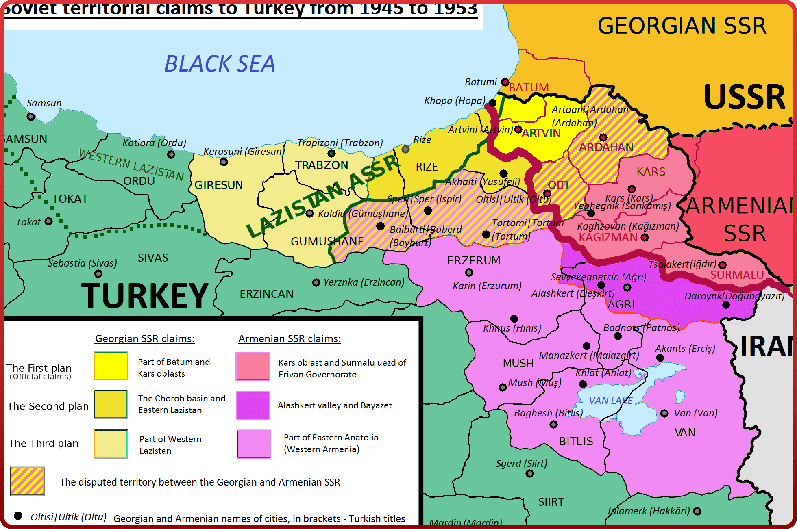

ТУРЕЦКИЙ ВОПРОС
Хорошо известно, что «турецкий вопрос» стал одним из важнейших в повестке дня Потсдамской конференции, проходившей в июле-августе 1945 г. Именно здесь советские лидеры впервые после 1921 г. официально поставили вопрос об «исправлении» советско-турецкой государственной границы и во время самой конференции к этому вопросу возвращались не раз, в том числе в ходе личной беседы В.М. Молотова и британского министра иностранных дел, во время «разъяснений» В.М. Молотова Черчиллю в ходе одного из официальных заседаний конференции и, наконец, во время выступления И.В. Сталина, когда он прямо заявил «о намерении вернуться к границам царской России, существовавшим до Первой мировой войны». Однако, как известно, лидеры Великобритании и США уклонялись от принятия какого-либо решения по этому вопросу, сославшись на то, что тема «исправления» советско-турецкой границы касается исключительно двусторонних отношений и должна быть решена СССР и Турцией самостоятельно. Однако на деле это означало, что союзники не поддержали требования Москвы и выступили против любых попыток И. В. Сталина добиться расширения советской территории за счёт турецких провинций. Однако советскому руководству так и не удалось добиться от Турции каких-либо территориальных уступок.Давление СССР на Турцию было воспринято вчерашними союзниками не только как стремление включить её в сферу советского влияния, но и как попытку Кремля расширить с помощью «турецкого плацдарма» своё военное и политическое присутствие в Средиземноморье, в регионе Ближнего и Среднего Востока. В устах политической элиты Запада всё чаще стали звучать озабоченность по поводу усилившихся великодержавных тенденций Москвы и даже призывы к политике сдерживания экспансионистских устремлений Советского Союза. Так Турция не в последнюю очередь благодаря жёсткой позиции И. В. Сталина и В. М. Молотова стала для западных стратегов и дипломатов важнейшим элементом сдерживания Москвы. В свою очередь, Москва, выдвинув неприемлемые для Анкары территориальные претензии, добилась обратного эффекта: турецкое правительство стало более энергично искать поддержку у ведущих западных держав, что в конечном счёте заметно ускорило движение Турции в сторону НАТО, куда она вступила в феврале 1952 г. Лишь после смерти И. В. Сталина новое советское руководство стало выстраивать более гибкую политику в отношении Анкары и отказалось от прежних территориальных претензий и пересмотра режима Черноморских проливов, о чём уведомило турецкое правительство в официальной правительственной ноте от 30 мая 1953 г.